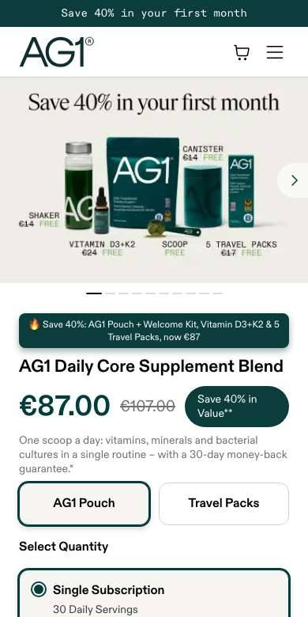
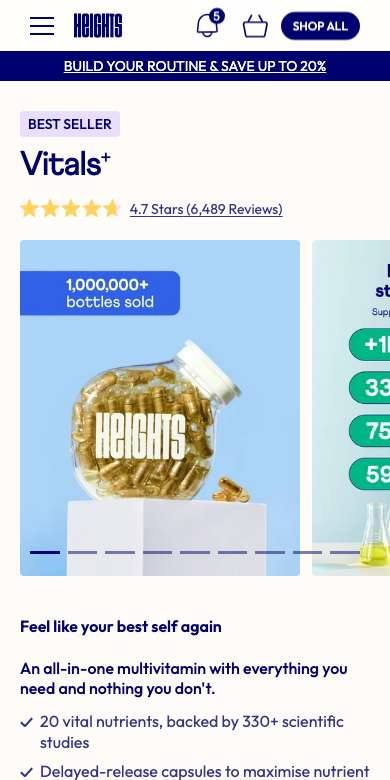
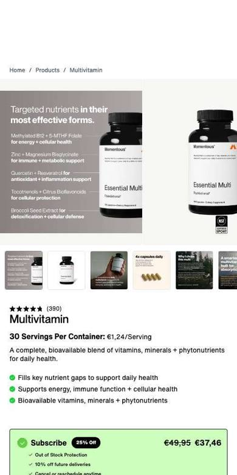
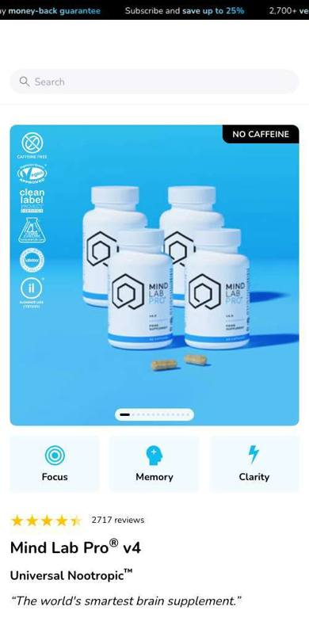
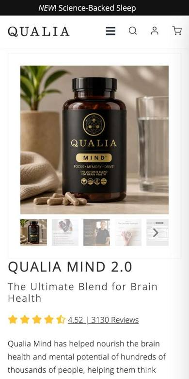
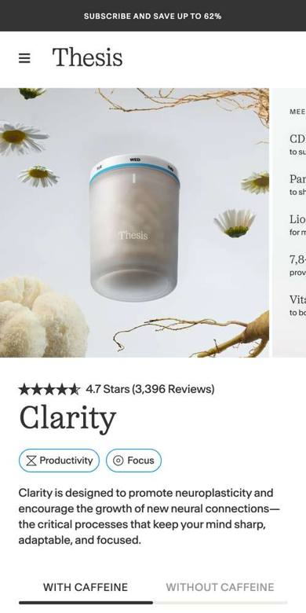
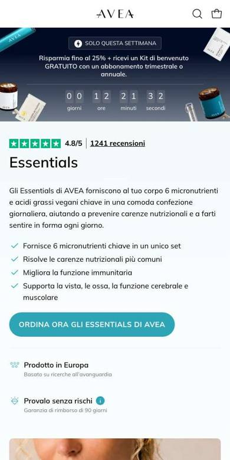
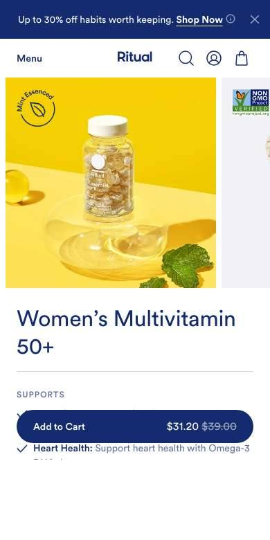
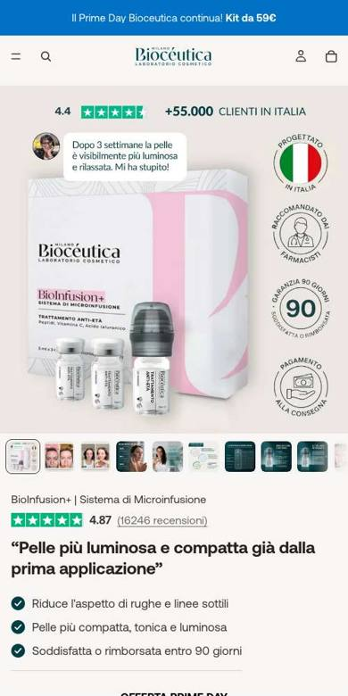
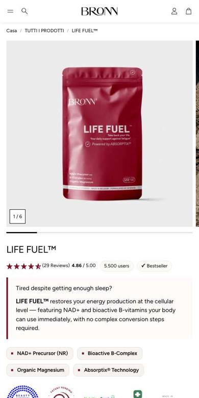

Una struttura unica per i cinque multinutrienti, poi per tutto il catalogo. Oggi vediamo cosa abbiamo studiato e come sarà fatta la pagina.
92%
delle visite alle pagine prodotto arriva da telefono
5
pagine, costruite oggi in due modi diversi
3 su 5
mostrano la tabella nutrizionale solo come foto dell'etichetta
Oggi ogni pagina è diversa dalle altre, e chi arriva da telefono fatica a trovare subito prezzo, composizione e risposte. Rifacciamo le pagine con una struttura sola, pulita, pensata per il telefono.
Cosa abbiamo studiato
Dieci marchi che vendono online, guardati da telefono
Le pagine prodotto dei marchi direct-to-consumer più curati, italiani e stranieri. Qui sotto il primo schermo che vede un cliente.

AG1

Heights

Momentous

Mind Lab Pro

Qualia

Thesis

Avea Life

Ritual

Bioceutica Milano

Bronn
Cosa fanno quasi tutti
1
Prezzo e bottone nei primi due schermi. Chi arriva da un'inserzione vede subito cosa compra e quanto costa.
2
Stelle e numero di recensioni sotto il titolo, del prodotto e non del negozio.
3
Costo al giorno accanto al prezzo, e le confezioni multiple in vista con la durata in giorni.
4
Tabella nutrizionale vera, non una foto, raggiungibile da un link vicino al prezzo.
5
Pochi ingredienti in evidenza, con forma e dose, e la lista completa a un clic.
6
Bottone fisso in basso mentre si legge, e un acquisto finale prima della fine pagina.
Cosa lasciamo fuori: l'abbonamento come leva principale, le garanzie vendute come argomento, le promesse di risultati a tempo.
La struttura
Una pagina sola, uguale per tutti i prodotti
Quattro parti, nell'ordine deciso insieme il 24 settembre: prima le caratteristiche, poi perché il prodotto, poi perché comprarlo, poi i blocchi uguali per tutti.
1
Le caratteristiche
Foto del prodotto
Titolo, stelle e tre fatti in evidenza
Acquisto con 1, 2 o 3 confezioni
Benefici
Ingredienti e forme
Tabella completa dei nutrienti
2
Perché il prodotto
Perché esiste e per chi è
3
Perché comprarlo
I numeri
Quanto costerebbe comprare tutto a parte
Le recensioni del prodotto
4
Uguali per tutti
Come si usa
Qualità e produzione in Italia
Lorenzo
Domande
Completa la tua routine
Acquisto finale
Due novità. Le confezioni da 1, 2 e 3 sono già in vista, ognuna con un link che le mette nel carrello con lo sconto applicato (gli sconti sono da decidere insieme). E la sezione "Completa la tua routine" risponde a come prenderlo con altri integratori e propone i prodotti che lo completano, come il collagene.
Il confronto tra i cinque multinutrienti avrà una pagina sua, per non confondere chi è sulla pagina di un prodotto.
Come andiamo avanti
Si parte da Elisir
1
La struttura: la vediamo oggi insieme.
2
La pagina di Elisir: testi e grafica, con lo stile della landing multinutrienti.
3
La tua revisione: testi, benefici e claim, sulla pagina finita.
4
Gli altri quattro: Elisir Basic, Essentiel, Revolution, Paleocomplex. Poi il resto del catalogo.
Cosa ci serve da te
L'ok alla struttura e il payoff per il titolo
I testi dei benefici partono dalle schede prodotto: li controlli tu sulla pagina finita.
Fonti: studio delle cinque pagine prodotto attuali (7 ottobre), benchmark di dieci marchi direct-to-consumer (8 ottobre), visite Google Analytics dal 9 luglio al 6 ottobre 2026. Documento interno riservato.